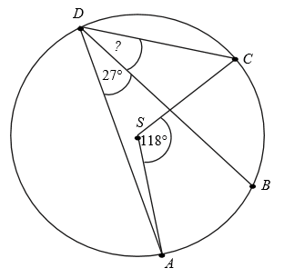
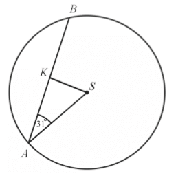

Matura 2016 maj
Rozwiązania zadań ze starej formuły programowej umieściłem na tej stronie.
Dla każdej dodatniej liczba \(a\) iloraz \(\frac{a^{-2{,}6}}{a^{1{,}3}}\) jest
równy
A.\( a^{-3{,}9} \)
B.\( a^{-2} \)
C.\( a^{-1{,}3} \)
D.\( a^{1{,}3} \)
A
Liczba \(\log_{\sqrt{2}}(2\sqrt{2})\) jest równa
A.\( \frac{3}{2} \)
B.\( 2 \)
C.\( \frac{5}{2} \)
D.\( 3 \)
D
Liczby \(a\) i \(c\) są dodatnie. Liczba \(b\) stanowi \(48\%\) liczby \(a\) oraz
\(32\%\) liczby \(c\). Wynika stąd, że
A.\( c=1{,}5a \)
B.\( c=1{,}6a \)
C.\( c=0{,}8a \)
D.\( c=0{,}16a \)
A
Równość \((2\sqrt{2}-a)^2=17-12\sqrt{2}\) jest prawdziwa dla
A.\( a=3 \)
B.\( a=1 \)
C.\( a=-2 \)
D.\( a=-3 \)
A
Jedną z liczb, które spełniają nierówność \(-x^5+x^3-x\lt -2\), jest
A.\( 1 \)
B.\( -1 \)
C.\( 2 \)
D.\( -2 \)
C
Proste o równaniach \(2x-3y=4\) i \(5x-6y=7\) przecinają się w punkcie \(P\). Stąd
wynika, że
A.\( P=(1,2) \)
B.\( P=(-1,2) \)
C.\( P=(-1,-2) \)
D.\( P=(1,-2) \)
C
Punkty \(ABCD\) leżą na okręgu o środku \(S\) (zobacz rysunek). Miara kąta \(BDC\)
jest równa 
A.\( 91^\circ \)
B.\( 72{,}5^\circ \)
C.\( 18^\circ \)
D.\( 32^\circ \)
D
Dana jest funkcja liniowa \(f(x)=\frac{3}{4}x+6\). Miejscem zerowym tej funkcji
jest liczba
A.\( 8 \)
B.\( 6 \)
C.\( -6 \)
D.\( -8 \)
D
Równanie wymierne \(\frac{3x-1}{x+5}=3\), gdzie \(x\ne -5\),
A.nie ma rozwiązań rzeczywistych.
B.ma dokładnie jedno rozwiązanie rzeczywiste.
C.ma dokładnie dwa rozwiązania rzeczywiste.
D.ma dokładnie trzy rozwiązania rzeczywiste.
A
Na rysunku przedstawiony jest fragment paraboli będącej wykresem funkcji
kwadratowej \(f\). Wierzchołkiem tej paraboli jest punkt \(W=(1,9)\). Liczby \(-2\) i \(4\) to
miejsca zerowe funkcji \(f\).  Zbiorem wartości funkcji \(f\) jest przedział
Zbiorem wartości funkcji \(f\) jest przedział
Zbiorem wartości funkcji \(f\) jest przedział A.\( (-\infty ;-2\rangle \)
B.\( \langle -2;4 \rangle \)
C.\( \langle 4;+\infty ) \)
D.\( (-\infty ;9\rangle \)
D
Na rysunku przedstawiony jest fragment paraboli będącej wykresem funkcji
kwadratowej \(f\). Wierzchołkiem tej paraboli jest punkt \(W=(1,9)\). Liczby \(-2\) i \(4\) to
miejsca zerowe funkcji \(f\).
Najmniejsza wartość funkcji \(f\) w przedziale \(\langle -1;2 \rangle \) jest równa
Najmniejsza wartość funkcji \(f\) w przedziale \(\langle -1;2 \rangle \) jest równa A.\( 2 \)
B.\( 5 \)
C.\( 8 \)
D.\( 9 \)
B
Funkcja \(f\) określona jest wzorem \(f(x)=\frac{2x^3}{x^6+1}\) dla każdej liczby
rzeczywistej \(x\). Wtedy \(f(-\sqrt[3]{3})\) jest równa
A.\( -\frac{\sqrt[3]{9}}{2} \)
B.\( -\frac{3}{5} \)
C.\( \frac{3}{5} \)
D.\( \frac{\sqrt[3]{3}}{2} \)
B
W okręgu o środku w punkcie \(S\) poprowadzono cięciwę \(AB\), która utworzyła z
promieniem \(AS\) kąt o mierze \(31^\circ \) (zobacz rysunek). Promień tego okręgu ma długość
\(10\).  Odległość punktu \(S\)
od cięciwy \(AB\) jest liczbą z przedziału
A.\( \left\langle \frac{9}{2};\frac{11}{2} \right\rangle \)
B.\( \left ( \frac{11}{2}; \frac{13}{2} \right\rangle \)
C.\( \left ( \frac{13}{2}; \frac{19}{2} \right\rangle \)
D.\( \left ( \frac{19}{2}; \frac{37}{2} \right\rangle \)
A
Czternasty wyraz ciągu arytmetycznego jest równy \(8\), a różnica tego ciągu jest
równa \(\left (-\frac{3}{2}\right )\). Siódmy wyraz tego ciągu jest równy
A.\( \frac{37}{2} \)
B.\( -\frac{37}{2} \)
C.\( -\frac{5}{2} \)
D.\( \frac{5}{2} \)
A
Ciąg \((x,2x+3,4x+3)\) jest geometryczny. Pierwszy wyraz tego ciągu jest równy
A.\( -4 \)
B.\( 1 \)
C.\( 0 \)
D.\( -1 \)
D
Przedstawione na rysunku trójkąty \(ABC\) i \(PQR\) są podobne. Bok \(AB\) trójkąta
\(ABC\) ma długość 
A.\( 8 \)
B.\( 8{,}5 \)
C.\( 9{,}5 \)
D.\( 10 \)
B
Kąt \(\alpha \) jest ostry i \(\operatorname{tg} \alpha =\frac{2}{3}\). Wtedy
A.\( \sin \alpha =\frac{3\sqrt{13}}{26} \)
B.\( \sin \alpha =\frac{\sqrt{13}}{13} \)
C.\( \sin \alpha =\frac{2\sqrt{13}}{13} \)
D.\( \sin \alpha =\frac{3\sqrt{13}}{13} \)
C
Z odcinków o długościach: \(5, 2a+1, a-1\) można zbudować trójkąt równoramienny.
Wynika stąd, że
A.\( a=6 \)
B.\( a=4 \)
C.\( a=3 \)
D.\( a=2 \)
D
Okręgi o promieniach \(3\) i \(4\) są styczne zewnętrznie. Prosta styczna do okręgu
o promieniu \(4\) w punkcie \(P\) przechodzi przez środek okręgu o promieniu \(3\) (zobacz rysunek).
 Pole trójkąta, którego
wierzchołkami są środki okręgów i punkt styczności \(P\), jest równe
Pole trójkąta, którego
wierzchołkami są środki okręgów i punkt styczności \(P\), jest równe
Pole trójkąta, którego
wierzchołkami są środki okręgów i punkt styczności \(P\), jest równe A.\( 14 \)
B.\( 2\sqrt{33} \)
C.\( 4\sqrt{33} \)
D.\( 12 \)
B
Proste opisane równaniami \(y=\frac{2}{m-1}x+m-2\) oraz \(y=mx+\frac{1}{m+1}\) są
prostopadłe, gdy
A.\( m=2 \)
B.\( m=\frac{1}{2} \)
C.\( m=\frac{1}{3} \)
D.\( m=-2 \)
C
W układzie współrzędnych dane są punkty \(A=(a,6)\) oraz \(B=(7,b)\). Środkiem
odcinka \(AB\) jest punkt \(M=(3,4)\). Wynika stąd, że
A.\( a=5 \) i \(b=5\)
B.\( a=-1 \) i \(b=2\)
C.\( a=4 \) i \(b=10\)
D.\( a=-4 \) i \(b=-2\)
B
Rzucamy trzy razy symetryczną monetą. Niech \(p\) oznacza prawdopodobieństwo
otrzymania dokładnie dwóch orłów w tych trzech rzutach. Wtedy
A.\( 0\le p\le 0{,}2 \)
B.\( 0{,}2\le p\le 0{,}35 \)
C.\( 0{,}35\lt p\le 0{,}5 \)
D.\( 0{,}5\lt p\le 1 \)
C
Kąt rozwarcia stożka ma miarę \(120^\circ \), a tworząca tego stożka ma długość
\(4\). Objętość tego stożka jest równa
A.\( 36\pi \)
B.\( 18\pi \)
C.\( 24\pi \)
D.\( 8\pi \)
D
Przekątna podstawy graniastosłupa prawidłowego czworokątnego jest dwa razy dłuższa
od wysokości graniastosłupa. Graniastosłup przecięto płaszczyzną przechodzącą przez przekątną
podstawy i jeden wierzchołek drugiej podstawy (patrz rysunek).  Płaszczyzna przekroju tworzy z podstawą graniastosłupa kąt
\(\alpha \) o mierze
Płaszczyzna przekroju tworzy z podstawą graniastosłupa kąt
\(\alpha \) o mierze
Płaszczyzna przekroju tworzy z podstawą graniastosłupa kąt
\(\alpha \) o mierze A.\( 30^\circ \)
B.\( 45^\circ \)
C.\( 60^\circ \)
D.\( 75^\circ \)
B
Średnia arytmetyczna sześciu liczb naturalnych: \(31, 16, 25, 29, 27, x\), jest
równa \(\frac{x}{2}\). Mediana tych liczb jest równa
A.\( 26 \)
B.\( 27 \)
C.\( 28 \)
D.\( 29 \)
C
W tabeli przedstawiono roczne przyrosty wysokości pewnej sosny w ciągu sześciu
kolejnych lat.
Oblicz średni roczny przyrost wysokości tej sosny w badanym okresie sześciu lat. Otrzymany
wynik zaokrąglij do \(1\) cm. Oblicz błąd względny otrzymanego przybliżenia. Podaj ten błąd w
procentach.
| kolejne lata | 1 | 2 | 3 | 4 | 5 | 6 |
| przyrost (w cm) | 10 | 10 | 7 | 8 | 8 | 7 |
\(4\%\)
Rozwiąż nierówność \(2x^2-4x\gt 3x^2-6x\).
\(x\in (0;2)\)
Rozwiąż równanie \((4-x)(x^2+2x-15)=0\).
\(x=4\lor x=-5\lor x=3\)
Dany jest trójkąt prostokątny \(ABC\). Na przyprostokątnych \(AC\) i \(AB\) tego
trójkąta obrano odpowiednio punkty \(D\) i \(G\). Na przeciwprostokątnej \(BC\) wyznaczono punkty
\(E\) i \(F\) takie, że \(|\sphericalangle DEC|=|\sphericalangle BGF|=90^\circ \) (zobacz rysunek).
Wykaż, że trójkąt \(CDE\) jest podobny do trójkąta \(FBG\). 
Ciąg \((a_n)\) jest określony wzorem \(a_n=2n^2+2n\) dla \(n\ge 1\). Wykaż, że suma
każdych dwóch kolejnych wyrazów tego ciągu jest kwadratem liczby naturalnej.
Skala Richtera służy do określania siły trzęsień ziemi. Siła ta opisana jest wzorem
\(R=\log \frac{A}{A_0}\), gdzie \(A\) oznacza amplitudę trzęsienia wyrażoną w centymetrach,
\(A_0=10^{-4}\) cm jest stałą, nazywaną amplitudą wzorcową. 5 maja 2014 roku w Tajlandii miało
miejsce trzęsienie ziemi o sile \(6{,}2\) w skali Richtera. Oblicz amplitudę trzęsienia ziemi w
Tajlandii i rozstrzygnij, czy jest ona większa, czy – mniejsza od \(100\) cm.
\(A=10^{2{,}2} > 100\)
Jeden z kątów trójkąta jest trzy razy większy od mniejszego z dwóch pozostałych
kątów, które różnią się o \(50^\circ \). Oblicz kąty tego trójkąta.
\(26^\circ , 76^\circ ,78^\circ \)
Podstawą ostrosłupa prawidłowego trójkątnego \(ABCS\) jest trójkąt równoboczny
\(ABC\). Wysokość \(SO\) tego ostrosłupa jest równa wysokości jego podstawy. Objętość tego
ostrosłupa jest równa \(27\). Oblicz pole powierzchni bocznej ostrosłupa \(ABCS\) oraz cosinus kąta,
jaki tworzą wysokość ściany bocznej i płaszczyzna podstawy ostrosłupa.
\(9\sqrt{30}\)
Ze zbioru wszystkich liczb naturalnych dwucyfrowych losujemy kolejno dwa razy po
jednej liczbie bez zwracania. Oblicz prawdopodobieństwo zdarzenia polegającego na tym, że suma
wylosowanych liczb będzie równa \(30\). Wynik zapisz w postaci ułamka zwykłego nieskracalnego.
\(\frac{1}{801}\)